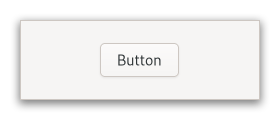

Gtk.Button¶
Example¶
- Subclasses
Methods¶
- Inherited
Gtk.Widget (179), GObject.Object (37), Gtk.Accessible (7), Gtk.Buildable (1), Gtk.Actionable (5)
- Structs
class |
|
class |
|
class |
|
class |
|
|
|
|
|
|
|
|
|
|
|
|
|
|
Virtual Methods¶
|
|
|
Properties¶
- Inherited
Name |
Type |
Flags |
Short Description |
|---|---|---|---|
r/w/en |
|||
r/w/en |
|||
r/w/en |
|||
r/w/en |
|||
r/w/en |
Signals¶
- Inherited
Name |
Short Description |
|---|---|
Emitted to animate press then release. |
|
Emitted when the button has been activated (pressed and released). |
Fields¶
- Inherited
Name |
Type |
Access |
Description |
|---|---|---|---|
parent_instance |
r |
Class Details¶
- class Gtk.Button(**kwargs)¶
- Bases
- Abstract
No
- Structure
The
GtkButtonwidget is generally used to trigger a callback function that is called when the button is pressed.An example
Gtk.ButtonThe
GtkButtonwidget can hold any valid child widget. That is, it can hold almost any other standardGtkWidget. The most commonly used child is theGtkLabel.- CSS nodes
GtkButtonhas a single CSS node with name button. The node will get the style classes .image-button or .text-button, if the content is just an image or label, respectively. It may also receive the .flat style class. When activating a button via the keyboard, the button will temporarily gain the .keyboard-activating style class.Other style classes that are commonly used with
GtkButtoninclude .suggested-action and .destructive-action. In special cases, buttons can be made round by adding the .circular style class.Button-like widgets like [class`Gtk`.ToggleButton], [class`Gtk`.MenuButton], [class`Gtk`.VolumeButton], [class`Gtk`.LockButton], [class`Gtk`.ColorButton] or [class`Gtk`.FontButton] use style classes such as .toggle, .popup, .scale, .lock, .color on the button node to differentiate themselves from a plain
GtkButton.- Accessibility
GtkButtonuses theGtk.AccessibleRole.BUTTONrole.- classmethod new()[source]¶
- Returns
The newly created
GtkButtonwidget.- Return type
Creates a new
GtkButtonwidget.To add a child widget to the button, use [method`Gtk`.Button.set_child].
- classmethod new_from_icon_name(icon_name)[source]¶
- Parameters
- Returns
a new
GtkButtondisplaying the themed icon- Return type
Creates a new button containing an icon from the current icon theme.
If the icon name isn’t known, a “broken image” icon will be displayed instead. If the current icon theme is changed, the icon will be updated appropriately.
- classmethod new_with_label(label)[source]¶
- Parameters
label (
str) – The text you want theGtkLabelto hold- Returns
The newly created
GtkButtonwidget- Return type
Creates a
GtkButtonwidget with aGtkLabelchild.
- classmethod new_with_mnemonic(label)[source]¶
- Parameters
label (
str) – The text of the button, with an underscore in front of the mnemonic character- Returns
a new
GtkButton- Return type
Creates a new
GtkButtoncontaining a label.If characters in label are preceded by an underscore, they are underlined. If you need a literal underscore character in a label, use “__” (two underscores). The first underlined character represents a keyboard accelerator called a mnemonic. Pressing Alt and that key activates the button.
- get_child()[source]¶
- Returns
the child widget of self
- Return type
Gtk.WidgetorNone
Gets the child widget of self.
- get_icon_name()[source]¶
-
Returns the icon name of the button.
If the icon name has not been set with [method`Gtk`.Button.set_icon_name] the return value will be
None. This will be the case if you create an empty button with [ctor`Gtk`.Button.new] to use as a container.
- get_label()[source]¶
- Returns
The text of the label widget. This string is owned by the widget and must not be modified or freed.
- Return type
Fetches the text from the label of the button.
If the label text has not been set with [method`Gtk`.Button.set_label] the return value will be
None. This will be the case if you create an empty button with [ctor`Gtk`.Button.new] to use as a container.
- get_use_underline()[source]¶
- Returns
Trueif an embedded underline in the button label indicates the mnemonic accelerator keys.- Return type
gets whether underlines are interpreted as mnemonics.
See [method`Gtk`.Button.set_use_underline].
- set_child(child)[source]¶
- Parameters
child (
Gtk.WidgetorNone) – the child widget
Sets the child widget of self.
Note that by using this API, you take full responsibility for setting up the proper accessibility label and description information for self. Most likely, you’ll either set the accessibility label or description for self explicitly, or you’ll set a labelled-by or described-by relations from child to self.
- set_has_frame(has_frame)[source]¶
- Parameters
has_frame (
bool) – whether the button should have a visible frame
Sets the style of the button.
Buttons can has a flat appearance or have a frame drawn around them.
- set_icon_name(icon_name)[source]¶
- Parameters
icon_name (
str) – An icon name
Adds a
GtkImagewith the given icon name as a child.If self already contains a child widget, that child widget will be removed and replaced with the image.
- set_label(label)[source]¶
- Parameters
label (
str) – a string
Sets the text of the label of the button to label.
This will also clear any previously set labels.
- set_use_underline(use_underline)[source]¶
-
Sets whether to use underlines as mnemonics.
If true, an underline in the text of the button label indicates the next character should be used for the mnemonic accelerator key.
- do_activate() virtual¶
- do_clicked() virtual¶
Signal Details¶
- Gtk.Button.signals.activate(button)¶
- Signal Name
activate- Flags
- Parameters
button (
Gtk.Button) – The object which received the signal
Emitted to animate press then release.
This is an action signal. Applications should never connect to this signal, but use the [signal`Gtk`.Button::clicked] signal.
- Gtk.Button.signals.clicked(button)¶
- Signal Name
clicked- Flags
- Parameters
button (
Gtk.Button) – The object which received the signal
Emitted when the button has been activated (pressed and released).
Property Details¶
- Gtk.Button.props.child¶
- Name
child- Type
- Default Value
- Flags
The child widget.
- Gtk.Button.props.has_frame¶
- Name
has-frame- Type
- Default Value
- Flags
Whether the button has a frame.
- Gtk.Button.props.icon_name¶
- Name
icon-name- Type
- Default Value
- Flags
The name of the icon used to automatically populate the button.
- Gtk.Button.props.label¶
- Name
label- Type
- Default Value
- Flags
Text of the label inside the button, if the button contains a label widget.